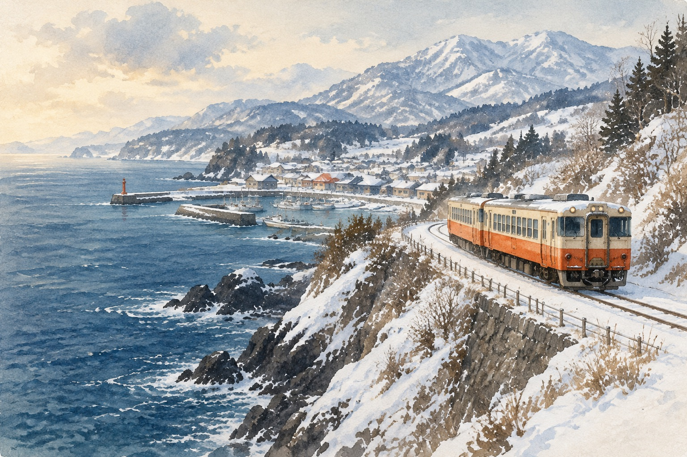

<template>
<link rel="stylesheet" href="../../assets/base.css">
<style>
@font-face{font-family:GenSekiGothic;src:url('../../assets/fonts/GenSekiGothic2TW-B.subset.woff2') format('opentype');font-weight:700}
#root{position:absolute;inset:0;width:100%;height:100%;overflow:hidden}
#root,#root *{font-family:GenSekiGothic,sans-serif;font-weight:700}
.dayrail{position:absolute;left:1050px;top:153px;width:784px;height:42px;display:flex;gap:18px;align-items:center;font-size:24px;line-height:1;z-index:5}
.dayrail span{width:80px;border-bottom:3px solid var(--line);padding:0 0 9px;color:var(--muted)}
.dayrail span.past{border-color:var(--ink)}
.dayrail span.today{color:var(--accent);border-color:var(--accent)}
.bg{position:absolute;inset:0;overflow:hidden;background:var(--ink)}
.bg img{width:100%;height:100%;object-fit:cover;display:block}
.shade{position:absolute;inset:0;background:linear-gradient(90deg,rgba(17,40,52,.86) 0%,rgba(17,40,52,.62) 38%,rgba(17,40,52,.05) 68%)}
.kick{position:absolute;left:96px;top:150px;color:#F2D3A8;font-size:28px;letter-spacing:6px}
.big{position:absolute;left:92px;top:205px;color:#F4F0E7;font-size:132px;line-height:1.12}
.stamps{position:absolute;left:96px;top:540px;display:flex;gap:16px}
.stamps span{border:2px solid rgba(244,240,231,.7);color:#F4F0E7;font-size:32px;padding:8px 22px;border-radius:999px;background:rgba(17,40,52,.35)}
.who{position:absolute;left:96px;top:640px;color:#F4F0E7;font-size:40px}
.who b{color:#F2B9A4}
.route{position:absolute;left:96px;top:712px;color:#F4F0E7;font-size:40px;display:flex;gap:18px;align-items:baseline}
.route i{font-style:normal;color:#F2B9A4}
.line{position:absolute;left:96px;top:800px;color:#F4F0E7;font-size:34px}
</style>
<div id="root" data-composition-id="01-opening" data-duration="11.98" data-width="1920" data-height="1080"><div class="scene">
<div class="bg"></div><div class="shade"></div>
<p class="kick" id="k1">2027.01.11 — 01.18</p>
<h1 class="big" id="b1">冬日山陰<br>八天七夜</h1>
<div class="stamps"><span id="s1a">妖怪街</span><span id="s1b">溫泉</span><span id="s1c">白壁運河</span></div>
<p class="who" id="w1"><b>6</b> 人・<b>8</b> 天・冬日旅行</p>
<p class="route"><span id="ra1">米子進</span><i id="rb1">→</i><span id="rc1">岡山出</span></p>
<p class="line" id="l1">把風景和休息，一起排進行程</p>
</div></div><script>(()=>{
const C=window.TL.scenes['opening'];const D=C.duration;const q=i=>C.clauses[i].at;const tl=gsap.timeline({paused:true});
const up=(s,a)=>tl.fromTo(s,{y:24,opacity:0},{y:0,opacity:1,duration:.7,ease:'power3.out'},a);
tl.fromTo('#bgi1',{scale:1.1,xPercent:-2},{scale:1,xPercent:0,duration:D,ease:'none'},0);
up('#k1',.2);up('#b1',.35);
up('#s1a',q(1));up('#s1b',q(2));up('#s1c',q(2)+.45);
up('#w1',q(3));up('#ra1',q(4));up('#rb1',q(5)-.15);up('#rc1',q(5));up('#l1',q(6));
tl.to({},{duration:D},0);
window.__timelines['01-opening']=tl;
})();</script></template>
